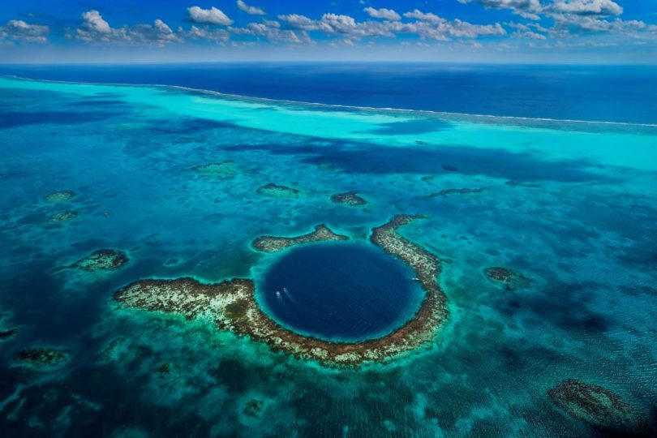

Cómo es nuestro planeta
La Tierra es un planeta rocoso perteneciente al sistema planetario de la estrella que llamamos Sol, llamado Sistema Solar. Las características físicas de la Tierra lo ubican entre los planetas llamados terrestres, es decir con un cuerpo rocoso, no un gigante compuesto por gases como Júpiter
Profundización
La Tierra es un planeta rocoso perteneciente al sistema planetario de la estrella que llamamos Sol, llamado Sistema Solar. Las características físicas de la Tierra lo ubican entre los planetas llamados terrestres, es decir con un cuerpo rocoso, no un gigante compuesto por gases como Júpiter, por ejemplo.
Tierra es más de un millón de veces menor que el Sol y la masa de la Tierra es nueve veces mayor que la de su satélite, la Luna. La temperatura media de la superficie terrestre es de unos 15 ºC.
En su origen, la Tierra pudo haber sido sólo un agregado de rocas incandescentes y gases. A la forma de la Tierra (entendida como la altura media del mar o que adoptaría el mar en los continentes) se le denomina geoide. El geoide es una superficie similar a una esfera achatada por lo polos (elipsoide). Su diámetro es de unos 12 700 km, más de diez veces la longitud de la península Ibérica.
De entre los cuatro planetas terrestres del Sistema Solar, es el que mayor gravedad superficial tiene, también el que tiene el campo magnético más fuerte, y la rotación más rápida. También es el único en el que se han descubierto placas tectónicas activas, es decir la superficie o corteza que cambia y se mueve sobre una base de magma líquido.
La Tierra tiene forma de esferoide oblato, es decir una especie de pelota achatada en los polos, lo que resulta en un abultamiento en lo que es el ecuador. Esta forma es el resultado de la rotación de la Tierra sobre su eje.
Y al parecer, desde los años noventa, se está haciendo cada vez más ancha en el Ecuador, por culpa del derretimiento de los hielos continentales del Ártico y de la Antártida.

El agua que se derrite de ellos, unas 300 toneladas al año, por culpa del Calentamiento Global, va a parar al Ecuador, por eso se le está engrosando la cintura a la Tierra.
Si la vemos desde el espacio, la Tierra igualmente parece una esfera, pero si nos acercamos vemos que tiene desviaciones como montañas y fosas marinas, la mayor es la del monte Everest, con 8848 metros sobre el nivel del mar, y el Abismo Challenger, al sur de la Fosa de las Marianas que se hunde 10911 metros bajo el nivel local del mar.
Pero como la superficie terrestre está más abultada en el ecuador, los lugares más alejados del centro del planeta son Huascarán en Perú y el volcán Chimborazo, Ecuador.
Pero como la superficie terrestre está más abultada en el ecuador, los lugares más alejados del centro del planeta son Huascarán en Perú y el volcán Chimborazo, Ecuador.
La estructura de la Tierra es la siguiente, los primeros 35 kilómetros desde la superficie hacia el centro de la Tierra corresponden a la llamada corteza, que es de silicato sólido. En los siguientes 25 kilómetros se encuentra el manto superior, que es sólido pero altamente viscoso.